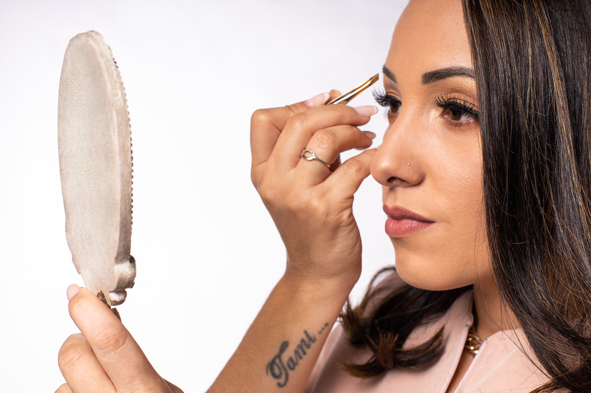

Sobre Mim
Com anos de experiência e várias especializações em técnicas modernas, como microblading, design fio a fio e visagismo, me dedico a oferecer um serviço de qualidade, com um atendimento personalizado e cuidado em cada detalhe. Para mim, cada sobrancelha é uma obra de arte, e busco sempre resultados naturais, simétricos e duradouros.
Minha abordagem vai além da simples documentação; adoro contar histórias através das minhas imagens. Tenho um olhar atento para os pequenos detalhes, os sorrisos espontâneos e as interações sinceras, o que me permite criar álbuns que refletem a verdadeira essência dos momentos vividos. Cada projeto é uma nova oportunidade de explorar a individualidade de cada cliente, garantindo que suas personalidades e emoções sejam perfeitamente representadas.
Seja para corrigir falhas, dar mais definição ou criar um olhar mais marcante, estou à disposição para ajudar você a conquistar sobrancelhas que combinem com sua personalidade e estilo. Seu olhar merece ser realçado da melhor forma possível, e estou aqui para garantir que isso aconteça com a máxima perfeição.